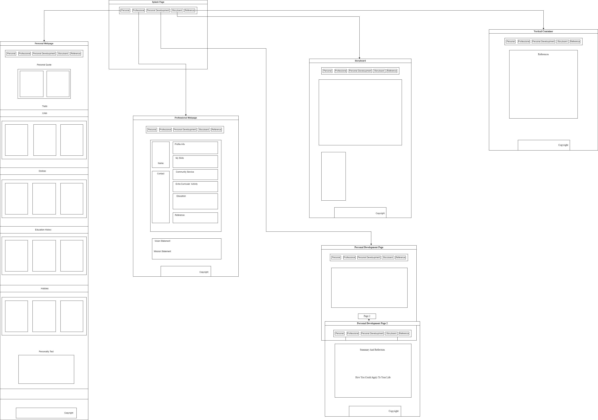

|  |
| Splash Page/Home Webpage This is the home page/Splash page, this page is what the user will see first and will use the hyperlinks to be redirected to the other pages. Personal Webpage This Personal webpage contains a breif description about myself such as: my likes, dislikes, two inspirational quotes, hobbies and education. It also contains a personality test, (Keirsey personality test) which I have completed and reasons proving is vadility. Professional Webpage This is the professional webpage, this page consists of my Resume, vision statement and mission statement for my future career. Personal Develoupment Webpage This Webpage consists of a brief description of my strength using clear language, and reflecting how I have been developing myself. Personal Develoupment Webpage2 This Webpage contains a summary and reflection of Chapters 4 – 7 of “Twelve Pillars” by Jim Rohn and Chris Widener. It also contains meaningful, paragraphs explaining how I could apply what I have read to my life. Storyboard Webpage This Storyboard webpage contains:
This page consistes of all the sources that have been cited in the text. It will allow readers to locate the sources themselves in order to read more about the information cited in the website. Target Audience
|